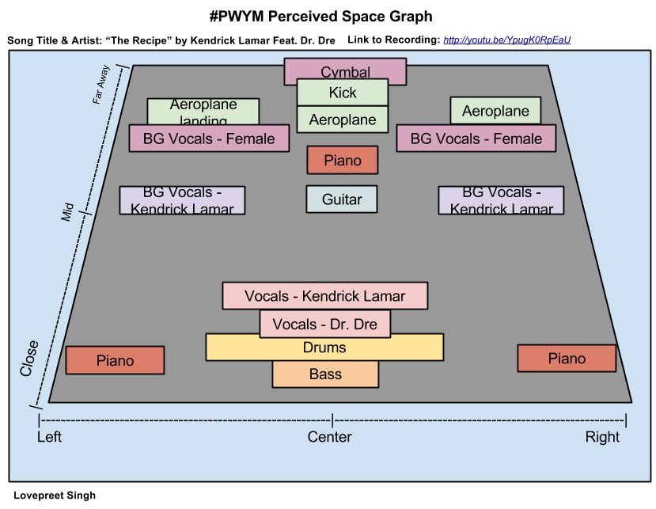
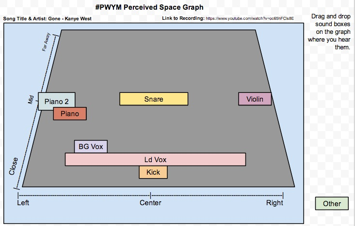
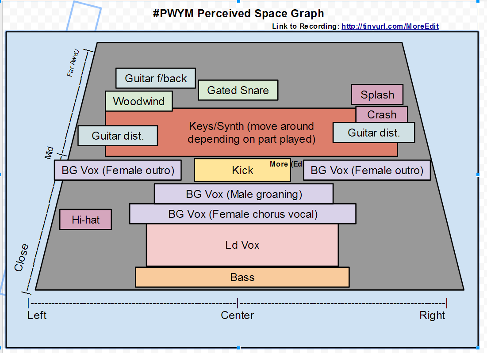
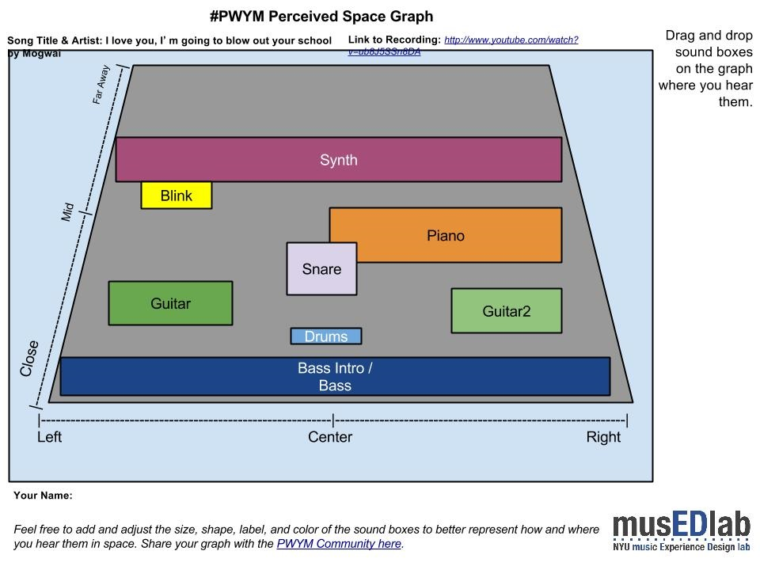

After sharing and discussing your Perceived Space Graphs and chosen recordings with your Crew over in the Meet category, share it here as a Reply to this topic so that everyone can see your completed Space Graphs.
Tips for sharing
Embed a YouTube video or Soundcloud link to the track you analyzed in your post. Our community software makes this super easy. Just put a link to the track or video on a separate line with blank lines above and below the link, and a playable version of the file will embed. Like this:
Embedded media omitted from this public edition
Add the start time of the place in the YouTube video where your analysis starts. If you add the following code at the end of our YouTube URL: #t=timeinseconds (e.g., [external link withheld] [link withheld]), the embedded video will start 1 minute and 16 seconds (76 seconds) into the video like this:
Embedded media omitted from this public edition
Add a screenshot of your Perceived Space Graph. Our community software makes it easy to just drag and drop an image file right into the post where you are typing. Embedding the screenshot (in addition to the link to your Google Chart) makes it easy for someone viewing your post to see your graph, while reading about your post.
This is my Module 2 project share. Not sure how this works so I hope I have it right.
I picked "Step" by Vampire Weekend. It's a song I learned to play recently on guitar and I like it.
Embedded media omitted from this public edition
For my space graph, I picked the verse, which starts at about 30 seconds and lasts until 1 minute. You can see the graph here: [external link withheld] [link withheld]Image omitted from this public edition.
The verse is not so spatially interesting in terms of panning. Most of the instruments seemed to be more or less in the center to me. What is interesting is how the doubling of the vocals makes that more interesting by adding some texture and harmony, and also how the tambourine sound doubles the snare in the background. The snare is pretty loud and reverby, and the tambourine just adds more energy to it. I think it works well.
By bass and kick drum are both pretty quite, but very dry so they seem closer. They play a basic ground baseline which continues throughout the song. Overall, the mix in the first verse seems pretty sparse, everything is very clear.
Once nice vocal effect I will add in the transitions. When the two voices are singing in the intro, they seem panned hard left and right, and then when the verse begins they start to sing together in the middle, which makes the song become more immediate. And again, when the chorus starts, the backing vocal drops out and the main vocal gets more reverb. Half way through, the backing vocal comes in on the side to ask the main vocal a question "What you on about?". The second verse doesn't have backing vocals at all.
As the song is about the band growing up musically (and in general I suppose) and transitioning from one phase to another, it's nice to see that reflected in the vocals
So here is my Module 2 project. I am not sure how accurate my graph is since I have no musical background but here goes anyway.
The song I decided to analyse was "The Recipe" by Kendrick Lamar Feat. Dr. Dre (produced by Scoop DeVille).
Embedded media omitted from this public edition
For my Perceived Space graph, I decided to analyze the song from 0:00 to 0:45. To view my chart click here [link withheld] or you can look at embedded screenshot of my chart below:

I like how the song used different instruments and brings them in at different parts of the song for certain periods. Initially I found it difficult to distinguish between the different instruments being used in the song because of the overpowering bass and drums. But after listening to it several times carefully I was able to identify several of the instruments being used. Most of the sounds I heard felt like they were coming from the left and right of me. It was like the same sound was being played twice at two different locations. I am not sure how accurate I was so feedback will be much appreciated.
I think your analysis is right on. It's a pretty common practice to take a mono sound like a single vocal, and making it stereo by duplicating it and placing one copy on each side. There are plugins that do that, I use them myself. This is a really interesting track, you're totally right about the variety of instrumentation entering and exiting.
I have chose to do the space graph on the song Closer, Faster by Against the Current. They mainly make covers on Youtube but they also have original songs, this being one of them. They are probably one of my favourite bands at the moment.
Embedded media omitted from this public edition
Image omitted from this public edition.
[external link withheld] [link withheld] The guitar part for most of the song is in an awkward position that I have never noticed before. I don't know if it's just the recording of it that I listen to but it's off to the left a little bit but in the middle as well. the background vocals come from both sides and have a decent amount of echo. they come from both far sides and not the middle. There is a little bit of echo on the lead singer but it does not add that much depth in the sound.
How does this work? If I take a track (vocal) and hard pan it left, then duplicate it and hard pan the duplicate right, how do I avoid simply having the track be in the "middle" (since tracks equally panned across left and right are in the middle)?
Not entirely sure how accurate this graph is, as the sound gets a little dense further in. I worked this graph from the first 1:50 of the song, and might get into the other sections of the song later.
[external link withheld] [link withheld]
The main spine of the song is the bass, drums, and the piano, which seem to remain fairly consistent in space all the way through. There's a slightly wet reverb on the snare, particularly, on the drums, but the kit mostly seems like it's all in the same space, as is designed to sound tight and relatively sparse.
The guitar part seems to move around quite a bit, with many of the licks seeming to be panned between left close and further away right (on a side note, although not included in this graph, Larry Carlton's solo seems mostly to be centre and far, behind the vox). The EP, also, while being fairly symmetrical, also seems to occasionally favour the right side, and seems often to move around in reply to the guitar licks. There are also various synth instruments used, often on the big almost percussive chords in the verses, but the main one I picked out sounds a bit like a theremin, which is usually far at the back favouring the left. I think the piano part, while fairly balanced, also tends to pan according to where on the keys you are (bass tones are panned more to the left, treble tones favour the right, giving you a sense of the space of the actual instrument).
Vocals are pretty consistent, placed around the middle, with BVs behind that. A generous amount of reverb on these gives them a kinda spacey feel, which seems to work well against the tight and sparse rhythm section.
I picked this song firstly just because I like it, but because the way the sounds are arranged shows off the interesting chord changes and obviously the skill of the musicians, but also gets at the mood of the song, of a 'DJ with issues' manning the night shift - moody in it's intermittent sparseness and denseness, groovy while introspective, and generally coming across as a kind of subversion of the easy-listening late night jazz style.
Image omitted from this public editionParticipant 428 said:
If I take a track (vocal) and hard pan it left, then duplicate it and hard pan the duplicate right, how do I avoid simply having the track be in the "middle" (since tracks equally panned across left and right are in the middle)?
You can create two instances of the box for the sound and put one hard left and one hard right. This is often done in production as a "chorus" effect with one take a sample on the left and another on the right. One tip is to listen for perceived "width" of a sound source. Does it sound like it is coming from a small, point source, or is it wide and all-encompassing? You can change the width (and depth) of the boxes to best represent how you hear the sounds.
I think Participant 428 was asking how a centered narrow sound differs from a centered wide sound in the mix since both appear equally in the left and right channels. Using Participant 217 Gilbert's Perceived Space Graph as an example, how would Ld Vox differ from Piano in the mix?
I think you answered the question but perhaps with a bit of subtlety. What I understand you to say is that slightly different versions are needed in the two channels to create a chorus effect. Is a chorus effect the way width is created in the mix? And are two not quite identical versions of a track needed to create a chorus effect?
Is this the same thing that is going on in double tracking which I understand to mean that a second recording has been made of the same material and both are used in the mix?
Finally, I just read about artificial double tracking (ADT) where a second track is made from the first by slightly slowing and speeding the original track which is then used to create a double track effect.
Am I headed in the right direction? Or am I wandering off into the weeds?
I picked this song, because College Dropout, and Late Registration are two of my favorite albums. And I love this song particularly because of the combination of piano and the drums My analysis starts at :11 and goes to 2:00.
I'm curious to hear everyone's feedback. I'm pretty new to this, and it almost seems too simple of a beat

[external link withheld] [link withheld]
EDIT: if I were to do it again, I would bring the snare closer and keep it in the middle. I just don't feel like uploading a screenshot again ...lol
Image omitted from this public editionParticipant 331 said:
I think Participant 428 was asking how a centered narrow sound differs from a centered wide sound in the mix since both appear equally in the left and right channels. Using Participant 217 Gilbert's Perceived Space Graph as an example, how would Ld Vox differ from Piano in the mix? If Participant 217 heard them as overlapping left to right, then I would suggest extending the Piano boxes into the middle of the graph.
Based on what I see in Participant 217's graph, I would interpret the Ld Vox to be heard in the center and not overlapping (left to right) the two piano tracks, which are located hard left and hard right.
Image omitted from this public editionParticipant 331 said:
Is a chorus effect the way width is created in the mix? And are two not quite identical versions of a track needed to create a chorus effect?
In general, a chorus effect is where you have one track that is in some way doubled (or more) to create the effect of multiple performances at the same time, like the difference from a solo voice to a choir of voices.
Chorusing, in general, does not necessarily have anything to do with width. You could have a chorused, multitracked guitar part panned hard left, for example.
Image omitted from this public editionParticipant 331 said:
Is this the same thing that is going on in double tracking which I understand to mean that a second recording has been made of the same material and both are used in the mix?
Finally, I just read about artificial double tracking (ADT) where a second track is made from the first by slightly slowing and speeding the original track which is then used to create a double track effect.
Yes. Both are ways to create a chorus effect. You can double (or more) track the sounds or you can use ADT.
My question though, is this: if I had a single vocal track and I wanted it to play dead center, I would have the track play out of both speakers at exactly the same time and volume. This would create the audio illusion of a single voice in the middle of the two speakers.
How is this different from taking a track, making an exact copy of it, and playing them in perfect sync at the same level, one hard right and the other hard left?
Doesn't there have to be some difference between the two tracks so they don't become just a centered "illusion" track?
My question though, is this: if I had a single vocal track and I wanted it to play dead center, I would have the track play out of both speakers at exactly the same time and volume. This would create the audio illusion of a single voice in the middle of the two speakers.
I don't know if that's entirely true. Alex will be able to smack me down if I'm entirely wrong, but my understanding is that you could have the same part split and panned hard left and right, and then match those outputs precisely in both ears, with essentially the same sound coming out of both speakers, but it doesn't sound central - it could equally appear that the sound is surrounding you, on both sides.
In other words, the fact that a sound is matched in both channels doesn't necessarily mean it's central - it depends on the specific output, its panning, and any other effects applied that influence perceived position in space.
Is it just me or is there a definite hi hat in the right of this song? The drums are spaced left and right throughout but I think the hi hat stays in the right.
The song I've chosen to analyze is "The Funeral" by Band of Horses. The spatial relationship of the vocals and instruments throughout the song is static so I haven't used a specific time stamp. Very straightforward mix with the customary Grand Canyon/large hall reverb. There may be some organ in there that I'm missing but it's fusing with the background vocals which are all reverb drenched and way back in the mix. Sounds fantastic on headphones with the bass really throbbing up front in the mix. I think if I were to do the mix I would use a ping pong delay on the lead guitar but the mix is basically perfect so why bother?
I chose " Tomorrow Never Knows' by The Beatles because of it's recording techniques ( tape loop sound effects ) effects on the voice and the use of a tamboura and sitar. Drums seem to be centered but the cymbal seems further back and wide.
This was a really interesting module! I am SUPER new to music production (unless you count my electro band I had in high school)... so bear with me with my chart! I'm not sure if it is accurate or not, so let me know if you have any suggestions.
The song I chose was Dawn Golden's "I Won't Bend". Ever since I heard this song, I fell in love with Dawn Golden, and purchased the album immediately. I am a sucker for lyrics, so that drew me in, but I think the best bit is the haunting quality of the vocals and the organ combined along with the high-picked backup vocal making everything seem sad, serious, dream-like. I love this song so much, and it was fun to break it down.
I chose Sky full of stars by Coldplay (Produced by Avicii).
Embedded media omitted from this public edition
I have analysed the first section from 0:00 to 1:43 i. The verse and chorus have very similar instrumentals. the only difference is the addition of the Moog Synth. Image omitted from this public edition.
Any feedback would be much appreciated Thanks, Josh
I'm not sure if i heard it as accurate as i could, i felt a lot of the sound was right at center, sometimes they first appear on the right and feel like it's start to place itself to the center. I reviewed between 0.00-2.00 of the song. The song starts with an organ, very grounded to the center, you will notice a kind of bass like organ melody just underneath the main organ melody. You will hear a slow rake of notes on a guitar with delayed reverb towards the right or center. The song utilizes a lot of reverb on the guitar to create a distant mood. You will also hear a sampled monk chanting with a kind slow but heavy beat. Later on, the drum parts are doubled up with a moving kick, that makes the song move forward.
I choose this track because i'm quite the VAST fan. Frontman Jon Crosby composes some really good songs and just a Participant 374 album writing and production. Somehow i felt this band never got it's deserved share of success and recognition. I really do admire and look up to this band and Jon since i actually liked most of the albums they released.
This track created such an impression on me when i first heard it way back.
I really liked how the music really had this impressionist quality that conjured up surreal landscapes and i think Jon really wanted to create that experience in his music, particularly from this album cause i felt at times it had a cinematic vibe. Well i really do like feels like that and aim to do that in my music as well.
Okay, so here's my Module 2 homework. The song is the radio edit of "More" by the Sisters of Mercy. You can listen to it here [link withheld], or watch the YouTube below (timings will be slightly different on the YouTube version).
Embedded media omitted from this public edition
Here's my sound stage diagram. I've just done one to cover most of the song (which means I've fudged the synth parts) but here it is: [external link withheld] [link withheld]

The instruments/samples I was able to hear
-Participant 652 Eldreich lead vocals
-Powerful "gospel"-style female vocals in the chorus. These sound more intimate/closer in the outro--less reverb?
-Distorted rock guitar playing riff in chorus. Sounds like doubled and panned left and right to me.
-Some kind of woodwind instrument sample... perhaps a digeridoo? (2:29)
-"Breathy" eight-note percussive synth figure that starts in the intro and goes through much of song.
-Synth organ (intro)
-Electric piano plays stabbing chords and single note melody
-Gated/reverbed snare
-Constant hi-hat pattern panned left
-Feedbacking guitar shows up in a few places
-Percussive sample with heavy reverb around 3.19. Sounds like a steel pipe hitting concrete to me, but I don't really know what it is.
-Distant splash & crash sounds panned right
I chose this tune because it's one of my favourite songs and I was familiar with it, but what I really enjoyed about doing this 'close listening' was hearing quite a few things in it that I'd never noticed in it before, despite having listened to it hundreds of times--particularly its use of samples.
As with most people I usually relate to music based on the emotional content I perceive within it, so I guess the reason I'm happy to listen to this song multiple times and the reason it's important to me is the feeling/mood I think it captures, which I'd describe as situated within an atmosphere of psychological darkness, yearning, and menace, but imbued with a rather uplifting kind of power.
I found that a lot of the music I like I couldn't even work out what instruments were playing let alone where they were (I like quite punky music which largely seems to be a melange of instruments) so I thought I would go with something comparatively easy - 7 Nation Army by White Stripes. It can be listened to here [link withheld] and my graph is here [link withheld]
[participant mention] [link withheld] Great point about it being more challenging to label the sound sources in many genres of music. We're working on a video to help out with that.
I chose a piece by Participant 779 Eno from the album Taking Tiger Mountain by Strategy. The link to my graph is [external link withheld] [link withheld]
Here is the screen image: Image omitted from this public edition.
I have always found this piece particularly haunting and beautiful even though the lyrics (often with Eno) are rather nonsensical, they evoke a powerful mood. In analyzing it I was actually surprised to notice that the prominent synth bass is played twice, at extreme left and right positions. It give the illusion of centered, but they are not simply duplicated they are actually played twice. The vocal uses the same technique, sang twice you get that additional texture of slight differences (which is used in many recordings--Beatles, Nirvana, etc.).
This is a plot of the whole piece, the numbers on the synths relate to when they come into the song. I love the "lead synth" break which plays off of the two existing synths, on top of and in relation to one another. Also, the song builds beautifully from a distant trace of a synth, then the bass synths, drum machine, vocal and slowly introduces the other instrumentation throughout the song. I marked one instrument as a guitar, but your guess is as good as mine, it's an arpeggio-like instrument that could just as easily be a synth. I based this on the original CD recording, though I noticed the Google play music is marked as "remastered". I think my copy sounds better.
I would like to note that I was floored by the interview with the producer/engineer who said that for pop and rock that there is only center, far left, far right. I've always been obsessed with micro-placement across the spectrum, so I've spent several days listening carefully to my favorite mixes (Tom Waits, Tom Petty, Brian Eno, Dylan, etc.) and damned if he isn't correct! Totally stunned. Thanks for the opportunity to participate in this interesting experience.
Here is the track i chose Sia - Chandelier the Official Video version. I chose the track for its simplicity of orchestration as well as its various use of sympathetic sounds to create a new timbre to the overall mix.
Embedded media omitted from this public edition
Here is a list of my insights:
Image omitted from this public edition.
[external link withheld] [link withheld]
Of Note:
Hum: Track begins with the sound of a bass amplifier being recorded by a condenser microphone about 1-2 inches from the diaphragm. There is a distinct hum created by the warm tubes in the amplifier. Probably marshal bass stack with the bass, treble, and presence turned up to around 9 or 10. This relationship mimics the sound of high powered lights you might see in major motion picture releases brought into the foreground of the PSE to create tension. The hum can be heard mainly during the chorus as a foreground sound siting to the extreme pan positions adjacent to the vocals.
Track Specifics:
Intro: The sound of a low and dry snare drum, processed through a high pass filter used to remove the low end frequency of the drum, interrupts the electrical hum noise comes in off center and to the left.
Verse 1: The snare drum then opens up with a synthesized steel pan sound that mimics large chimes with reverb and chorus layers.
Pre-Chorus: Begins with a background reverse vocal drenched Panned left and right The kick drum with the snare in full reverb with a wobble bass line sitting on top of the drums just before the vocals.
Chorus: The chorus is a bass drum melody where thee bass changes notes on every 4th beat. The Bass amplifier sound can be heard creating a cackling noise that sits on top of the chores creating a electrified timbre panned to the left and right. A piano can be heard in the background emphasizing the bass guitar changes playing the same chord arrangement. The Vocals seem to spread during the chorus then shrink back to a more intimate sound.
Bridge Continuation of the chorus ending with the introductions of a doubled violin playing along with the steel drum.
Verse 2 Same Synthesized Steel pan sound dancing with the snare drum.
Pre-Chorus Instrument treatment repeated from the first pre-chorus.
Chorus Instrument treatment repeated from the first pre-chorus.
Bridge/Outro: As the song ends the drums stop playing with the bass guitar, then the steel drum leaving the piano and the violins ending with a lower hum of the bass amp with the volume and presence turned down.
I feel like a dope. I graphed "Sledgehammer" and then notice it was already the first post! Anyway, mine is not as detailed, covers the chorus, only matches some of the graph from the first post.
[participant mention] [link withheld] comment on my own post:
I tried to imagine that the various instruments were in my living room and then placed them relative to each other and as if I was listen to a live performance. I didn't indicate closeness to match volume as if I was looking at a volume meter for the instrument. So, the main voice seems front and center, clear and close as if the person is sitting across from me at the table. By comparison, the snare drum - which I think is louder than a human voice - is behind the voice. I think the use of reverb also effects my spacial perception. I hear more reverb on the snare drum than the main voice. To me, a greater mix of reverb to direct (dry) sound implies the sound is farther away from the listener in a large room. The greater distance allows more reverberating sound to mix with the direct sound. I think I'm trying to say the reverb really effects my sense of space, maybe more than just the volume of an instrument.
I'm not a huge Deadmau5 fan but I love this track. I had some trouble with the soundstage as the synths seem to really grow and come forward over time but I had a crack at it.
The song I've chosen is To Chicago by The Spill Canvas. Link. [link withheld]
Here is my perceived space graph for the song- I did notice that my graph was slightly different depending on whether I used desktop speakers, headphones, or my laptop on its own, so went for the desktop speaker version as that appeared to have the most space and width smile
On the first listen through, pretty much everything seemed to be in the centre... however, the more I listened to it I seemed to find more differences between ears, and areas that moved around during the song. For example, the guitar moves from a far away rhythm and close left lead in the verses to centred in the choruses and bridge.
No worries [participant mention] [link withheld]! In fact, we think it's great. We can compare yours to ours and have an interesting conversation. I really like how you gave a greater spatial area to the brass in Sledgehammer. Those tracks were recorded here in New York City at Power Station (now Avatar Studios) and laden with tons of artificial reverb. It's also interesting that you afforded a similar sense of space to the synth track (Prophet 5, I assume). Within the stereo mix, it does sound like it's in a large space, but when you solo it up in our multitrack tool - [external link withheld] [link withheld] - it sounds pretty dry to me. I think that's a great illustration of some of the audio trickery/creativity that goes into mixing and effects choices by the engineer and producer. In some cases the addition of reverb and enhanced space in some tracks can trick our minds into perceiving other dry recorded sounds to also be in that "perceived space."
Here is the Graph of the song I chose. [external link withheld] [link withheld]
Hi, I chose this song not only because I love this band but because I love how simple it is yet so full of melody. I think the synth organ leads the song throughout as a mid sound. The guitars have this great reverb that makes them sound far away which interprets the song very well. I placed the drums an bass closer because once the song gets closer to the end it seems that they get way louder than anything else.
[participant mention] [link withheld] Thanks, Alex. Aurally teasing apart instruments in a mix is something I would like to become better at. Indie rock mixes are especially frustrating for me, because I usually hear one homogeneous swirl of sound, but always suspect there are many layers of relatively simple guitar playing contained.
I used the big front to back blocks to represent the volume swells with synth and horns. Which brings up a point I was hoping could be addressed in detail at some point in this course: how to control in a mix - or represent spatially - a sound in terms on close/far or front/back.
In this module stereo left/right seems straight forward - not withstanding the earlier pan L/R versus center discussion - but near and far seem more complex. I think of this distance aspect in a few ways: 1. closeness of an instrument to a listener 2. closeness of an instrument to a mic (not necessarily the same as #1) 3. the size of the room or the qualities of reflected sound 4. overall loudness, I guess in terms of decibels
I might even add another: a wide stereo placement could imply more distance since far left would seem to be necessarily farther away than right in front of my face.
I'm fumbling for words now... I hope I can learn more pro-tips on these aspects as the course progresses.
Here's my project for module 2. I took a country & western tune that seemed simple. But I was amazed at the complexity of the mix. The mix changed so much from verse to chorus and back that I decided to do an animation of the space graph to try and keep up with it. Seems to me that the producer of this piece had a strategy of starting off simple and adding depth and complexity to the mix as the tune progressed.
Hope this works for embedding:
Embedded media omitted from this public edition
Anne Murray is famous for serving as her own backup group. The Bk Vox track is supposed to have been created by superimposing several copies of the Ld Vox track. (Sorry that the lyrics don't go on. I started adding them but before long gave up - too time consuming.)
This is a classic disco tune, but I love the happiness that transmit and its obvious and pretty simple sexual references .
The song was international success. The voices of Mayte and Participant 776 were warm and passionate.
I think that Rolf Soja, author of the tune pretended to emulate the sound of Phil Spector with the amount of synth in the song. Some kind of “wall of sound with synths”.
The percusive 1/16 hithat and the bass give to the tune the mood for dancing. Who wants more? [external link withheld] [link withheld]
I chose to do Macklemore and Participant 492 Lewis' "White Walls."
Embedded media omitted from this public edition
And here is my graph for it.
Image omitted from this public edition.
I did not know this was such a complicated song when I started. Even this fairly complicated graph doesn't show all the instruments. I hear the Macklemore vocals on both sides and a bit in the middle. The producer definitely separated a few of the instruments and intentionally placed them farther away. Learned a lot doing this exercise, and I am not going to listen to or make music the same way again.
Track of my choice is quite unusual, and may be a good example of how the panorama constructing techniques evolved.
Embedded media omitted from this public edition
The track comes from Niemen - Enigmatic (published in 1970). The album is considered one of the greatest polish rock records and combines rock, jazz (in this particular song sax solo was played by a legend - Zbigniew Namysłowski). What is so strange, is that part of the instruments is located against the rules highlighted in the course video, also the stereo separation is quite strong, which is easy to notice specially in case of bass guitar. Another thing is dynamics - I've put sax in two places, as Namysłowski is rather hard to be heard in the song's first part, then takes all the space for himself in improvisation, after which he gets back to the far plans but this time he doesn't dissapear and frequently breaks the harmonies and rhythms with spooky sounds.
[external link withheld] [link withheld]
On the other hand I wanted to analyze The Bug w/ Warrior Queen - Poison Dart, however the structure is too complex for the graph sketch, so I'd like to point out two things instead:
layering the drums: there are at least three different drum loops: effected drums (in back and little to the left), the main drumset (almost stricly centered), an additional snare drum at the end of some phrases (massive, sharp sound quite away and on the right side), percussion overs (a bit to the right in the middle of distance),
although main vocal is rather in front center, the back vocs (ending phrases) are two layers, and because the left one is a few miliseconds after the right one, it soudse like it was just few inches farther, both however sound like they closer to the listener than main vocal.
…and of course the track: Embedded media omitted from this public edition
… I'd like to mention, that might be completely wrong, as I often put my headphones backwards, and connect my speakers inversely - it's high time to label cables…
I chose Golden Child by Alicia Keys because it is one of my favorite, Unreleased, songs from her and also i like her use of the guitar as an accompany as well as a lead. [external link withheld] [link withheld]
I analyzed this song starting from 0 to 1:00 because it is when the majority of the instruments and vocals meet.
I am sending a space graph for the song "Turn of the Century" by Yes. The song can be heard at the link Embedded media omitted from this public edition
I have divided the song into four sections based on the expression of different melodic themes. The Space Graph is a static representation of the second section beginning around 3:49 (just after Chris Squire's "I am sure we know" background vocal) and extends via an instrumental build-up to the crashing cymbal at ~5:17.
I particularly like this song for several reasons: tasteful virtuosic playing without any excess by the guitarist, pianist and drummer: the drummer does not lay down conventional drum rhythms but instead contributes melodically using tuned percussion and cymbals; the arrangement is distinctly original and the emotional power conveyed by the song is reflected by the layers of vibraphone harmonics and Polymoog pads drenched in reverb.
In addition to the deep emotions elicited by this music, the song is also particularly challenging to dissect technically. For these reasons, I find it irresistible.
I chose to analyze the bridge and chorus of Mayer Hawthorne's "Her Favorite Song". I really enjoy the dark pop sound, and I wanted to know how the producers made the bridge seem so dark tonally while still maintaining a constant groove.
Embedded media omitted from this public edition
Image omitted from this public edition.
It seems that the two parts that contribute most to this effect are the drums, which consist of a low passed kick and hi hat. The hi hat becomes more prominent in the chorus because the filter cutoff is increased (more frequencies are let through), but it still lacks its highest frequencies. The guitar in the background is also low passed, which adds to the darker tone.
I also really enjoy Jessie Ware's vocals, which give the bridge such a beautiful texture and are even more beautiful when brought to the front of the mix for the chorus. Drenching her voice in reverb doesn't hurt either.Her voice is drenched in reverb, giving it a hauntingly beautiful quality in both sections.
If anyone has any comments or suggestions for my PSG, I'm all ears!
I chose "Chameleon Boy" by Blue October, because it's a favorite and also the lead singer of the group cited Peter Gabriel as one of his influences, so I thought it was appropriate. I went round and round on the location of some of the parts and I'm sure some of them are probably 'wrong' (I can't decide if the vocal is ahead or behind the Bass.) but this is the best I can come up with. Happy to hear suggestions or field questions.
I found it an interesting choice during at least one of the verses to stick the snare off to the left sort of by itself. Changed the dimension of the sound quite a bit, and that's why it has it's own box. I guess that it was gated, but correct me if I'm wrong. You can also definitely hear that individual drums on the kit have been panned around in certain spots.
Mogwai - I Love You, I'm Going to Blow up Your School (Intro e first section 00.00 - 02.30)

Mogwai - I Love You, I'm Going to Blow up Your School [link withheld]
One of my fav bands and one of my fav of their song. I picked up just of parte of the song beacuse it' s a bit long (7.33) and the mix is really dynamic.
BASS : the song starts with a bass solo. The first low note gives a dark tint to the wide sound. it' s close and in front.
DRUMS : the kick is really "weak", back the bass and placed at the center.
GUITAR: on the left side back the bass, the arpeggio steady the mood of the song.
GUITAR2 : on the right side back the bass, it gives brightness and shades to the section of the song.
SNARE : it' s back at the guitars, almost in the middle. dry sound (registered in a big room?).
PIANO : it starts on the right side, in the middle, to expand 'til the center of the space. Giving a dash of "mystery" and "opening" for the synth.
BLINK (synth) : on the left side, after the mid and after the piano. Giving interest to the listening and a touch of magic.
SYNTH : it starts at the end of the section of the song, far away and from side by side. it gives an unusual, unknown weird ambient to the song.
Post #58 is omitted from the public reading edition to protect personal information.
I love that idea that the other tracks timber can make you feel the space differently... that is a phenomenon I think I could use in some cases, leaving off reverb in tracks... Sometimes they sound great solo with reverb then seem to muddy up in playback. Or it could be the tascam Image omitted from this public edition... anyway, a nice thing to consider
[participant mention] [link withheld] Nice work on a good song. Love this early Eno. You know, I guess I've always assumed the Saxes were real, since he had sax players at hand, but in any case I can't argue with the placement.
Hey everyone, this is our first time making one of these and we could really use some opinion on our work. We're beginners and just want to see how we did. Check it out! We chose Lana Del Rey's song Blue Jeans
Hello! I've seen a lot of great analysis of a variety of genres and styles of songs here in this post! Great works! I love to hear songs to try to identify instruments, effects, arrangements, but never did a graph like this before! Please I'll be very thankful for your feedback. Feel free to write to me.
Embedded media omitted from this public edition
Image omitted from this public edition.
Notes: 0:00 The song starts with a clean electric guitar arpeggio, with a very little subtle staccato violins. 0:11 Dave start to sing with a Quiet Doubled voice. 0:31 SNARE SNARE SNARE SNARE ignite the song! 0:33 The guitar riff starts here with the rest of the song. 3:20 Here is when the little staccato violins appears again just for 8 seconds together with the quiet voice and the arpeggiated electric clean guitar.
PS: obviously this song have a tons of electric guitars, I just show 2 blocks (L and R) to represent the idea.
I've chosen Alive by Krewella, because I really enjoy the strong female vocal over the piano and heavy beat, and then the variety as it changes and throws in dubstep effects. It's high energy and it rocks!
Embedded media omitted from this public edition
I'm a beginner so I found the perceived space graph to be difficult but quite interesting. I've attempted to graph the section of the song from about 1:17 to 2:40. I've identified the following timbres, in order of their appearance (in the graph, the less prominent sounds are shown with a lighter border):
Lead/Background Vocals: Strong female voice with thick reverb (and BG vocals to far left/right) Piano: Normal piano sound, melodic, with some notes scattered to far left or right Kick:Heavy "thump" bass drum Whoosh: Processed transition effect of wind/surf Synth: Slightly distorted electronic chords, multiple layers, replaces piano later in track Drum Machine: Digital snare, typical drum machine sound
Image omitted from this public edition.
What do you think, sirs? Image omitted from this public edition
I thought this was a really interesting song because I perceived everything to be up front. All of the various instruments seem to be competing with each other for dominance in the "close" range, which seems to fit in perfectly with the lyrical theme (I'll share my theory on that shortly). There is virtually nothing that feels distant except for a few sections of backing vocal, but even that is in the middle instead of far back. I also felt that some of the sounds that would traditionally be centered were just barely off from the center, creating a slightly off-kilter feel. More specifically, I perceived the lead vocals and what I assume to be synth bass just to the left of center. The horns, which mimic the bass line, are clearly on both sides and are slightly out of synch with each other further adding to the song's odd feel. The only instrument that I perceived to be dead center was the drums, making the funky beat very immediate. This pattern shifts during the chorus as the bass, cymbals, and vocals flutter rapidly between extremes on the left and right.
For a song that seems to be pointing out absurdities of modern media (reality TV, YouTube, etc.) and how we react to them, I think the production approach is brilliant. The modern media is very in-your-face and there are a lot of noises competing for our attention, just like the various sounds in this song. There is very little subtlety and the pounding funk of the rhythm feels like a hammering heartbeat. There is an almost manic feel to the overall structure that works perfectly with the lyrics.
Nice map... Is there any significance in that some of the blocks are highlighted in Participant 374 black, and others in gray? Same for the text in some blocks.
I love The Shadow of your Smile - famous song successfully performed by many famous musicians. Kenny G style is very appealing to me. His soft, smooth sound of saxophone is mesmerizing. Plus I love romantic music. And it was easier for me to recognize instruments in the orchestra.
At the introduction, piano sounds front center, filling whole space.
When sax enters, sound comes from the very center with crystal clear voice, very live.
I can hear the guitar from very specific place on the left.
Strings fill most of the space behind saxophone, tending to the right.
I listened to the piece several times from a different perspectives and it was an interesting experience.
Here is my space graph: Image omitted from this public edition.
I'm just a beginner but it looks good to me. One comment: It appears the left/right sides are swapped, at least according to my headphones. Image omitted from this public edition
My only comment is that it sounds like the bass is actually much closer, and perhaps the sax part is a little further away, perhaps dead centre, further back than but sandwiched between the guitar and piano. The sound of reverb on the sax gives the impression of distance to me. The bass part is relatively quiet and percussive more than tonal, but I had the impression of having it 'under' me, or perhaps just in front of me, a foot or two away.
I also agree that maybe you had the channels swapped - guitar sounds in my right ear, piano favours the left along with the ride cymbal.
But, again, this is a perceived space graph. Perhaps we perceive it differently. Image omitted from this public edition
What a great choice of song! I like arrangement, harmony, and very complicated, sophisticated engineering work! Not a single sound lost in the complicated arrangement. Your graph looks good to me.
You right! Perhaps my graph should show "the piano sound evolution in space" better. By the way "... it starts on the right side, in the middle, to expand 'til the center of the space..." Thank you again for your interest and opinion. Cheers.
I picked "Six Different Ways" from The Cure starting from 0':40''
It fascinates me the atmosphere created by this song. The weird&naive piano melody in combination with Robert Smith voice, the violins, and the dreamy sounds (Flute, Weird Bells, and Long Drum): it is just irresistible!
I think the spacing of the song is very well done. There is hardly no masking except for the Flute, Weird Bells, and Long Drum in which the different paning makes the masking hardly noticeable.
I hope you enjoy and I would love to receive comments! Juan
Hello.. hope I'm not too late. I chose Such a Color by Shugo Tokumaru. [link withheld] I tend to like music that feels really... surrounding, and I rarely bother thinking about the pieces that make up the sound (thus joining this class). So here, starting out, I went for something "simpler" sounding that still does this.
Image omitted from this public edition.
I don't know that there's a harmonium in this.. I'm guessing. And for a while there I was thinking there were two ukuleles. But here's my best guess. I haven't looked at the waveform yet. The vocals and ukulele may well be dead centre, but feel pushed to the right a bit because of the background noise on the left. Interesting! Thanks, Matt
Image omitted from this public edition. I really like this mix by Participant 562 Newland. here's the link: [external link withheld] [link withheld]Any comments are welcome, Jorge
Great choice! I love piano improvisations, sweet tune. Your graphical placement looks nice, except I perceive piano closer than the bass. But of course, it is how I hear it in my earphones. Any way, good job!
I chose Más y más by Robi Draco Rosa. You can hear the song here:
[external link withheld] [link withheld]
The space graph shows from 0:11 to 0:30. Timbres move through the track, so I pick just a little portion to analize.
Image omitted from this public edition.
I had a hard time trying to find out what instrument sounds in the right side of the track, a guitar like sound. I thought it was a tiple at first, then I change my mind and said it was a charango and finally I identify the source as Puerto Rican Cuatro, the national instrument of Puerto Rico.
Hello. I've chosen Karma Police by Radiohead because it is a great sounding recording and the album itself is another rock music milestone. It seemed to be easy to analyze, but it turned out to pretty difficult for me.
I find pop songs fascinating. A pop song is often so simple anyone could have made it. What is it about that one song that it can take over the radio for weeks? What is it about Happy that Pharrell can do a 24 hour long music video and people like it?
Embedded media omitted from this public edition
Critical listening revealed that Happy by Pharrell Williams is very simple. Kicks and claps dominate the sound, with lots of reverb. Pharrell is singing close. Verse is carried by the organ with a hint of bass guitar. Organ and bass might also be in the chorus, but the backing vocals cover them up. Snare and cymbal complete the sound.
Image omitted from this public edition. [external link withheld] [link withheld]
Happy is not spatially or lyrically complex. But it works for a pop song.
This graph addresses the intro of Kanye West's song only. The bass is heavily distorted and compressed. The toms which follow are distorted and compressed as well. The cymbals are gated and panned hard left and right.
Next, the background vocals are delayed, stuttered and gated. They're panned real wide too.
The drum kit has a narrow pan and are rather dry with hand claps just off to the right.
The toms come in again but are panned to the left with a guitar effect countering to the right.
A distant background vocal, delayed, stuttered and gated, enters ping-ponging left to right. Thereafter, the bass reenters but doubled with a male vocal.
Kanye West's Black Skinhead: [external link withheld] [link withheld]
This song is unique in its arrangement and disparate use of parts. Very disruptive and disconcerting but works when put together. Quite innovative.
After going through some of my favorite songs and realizing I don't know how to appropriately "name" the sounds caused by various synthesizers, I chose something a little bit easier to identify.
I picked "1234" by Feist. The video here is not the official video, because I found that the official video recording was not the same as the album recording. (If you go to the official page, it appears to have a lot more reverb on it and it really changes the dynamic of the lead vocals.) Also, if you're like me and have a young child at home (or not...whatever), I highly recommend looking up this version of the song sung on Sesame Street. Highly enjoyable.
Embedded media omitted from this public edition
Image omitted from this public edition.
The song builds instrumentation up as it progresses starting with an acoustic guitar & the lead vocals. As it progresses, the sound becomes richer, adding percussion and piano and eventually a backup orchestra complete with lead and background trumpets and strings.
Possibly the most unique part is two distinct banjo parts played on the far right and far left in the foreground playing off of each other.
I'm already behind, but here's my space graph. I picked the song "National Lights" by The Court and Spark.
Embedded media omitted from this public edition
Image omitted from this public edition.
At its core, this a country ballad, but the texture and atmosphere pushes it away from being a straight-ahead country song. The electric organ (which I found much more noticeable in headphones than I did listening to it through my laptop speakers) creates a Participant 374 but lonely foundation for the song.
I've known this song for a long time, but I never really recognized the symmetry of it's textural parts until I started mapping out this graph. The basic vox, drums, bass and organ all live in the center, then the textures sit panned right and left, each piece with a complementary sound panned opposite. I especially like the electric/acoustic rhythm guitar layouts (there might be some acoustic on the left, too, though -- I occasionally thought I might be picking some up, but it might be overtones from the electric).
And I'm always a sucker for this type of male/female vocal interplay.
Last! Holy late-comer-post Batman Image omitted from this public edition Running a "tad" behind everyone, but finally stopped procrastinating and started posting.
Here's Mmm Mmm Mmm Mmm by Crash Test Dummies
Embedded media omitted from this public edition
Image omitted from this public edition
Pasted image907x707 53.3 KB
[link withheld]
I chose this track over numerous other possibilities because my initial impression was that it had a lot of stereo separation which would make it easier for me to identify instruments. To my ears it's beautifully produced (co-produced with Jerry Harrison of Talking heads) What I then found was that apart from the far-panned acoustic guitars and the backing vocals, many of the rest of the instruments are pretty centrally placed - even the various drums & percussion aren't panned out too far.
I did struggle to place instruments in the depth field - apart from the lead vocals and bass being up front, most of the rest sounds mid-field to me, with little sounding that far away (apart maybe from some percussion in a few parts)
Hi Kevin, Great Song! I'm very late on this course! I'm very new at this, but was hoping to discuss what I hear...I thought that Synth 1 was more forward (closer) at the beginning, until 4.00, then fades away? Comes back again 4.46? Somehow, I feel that it seemed slightly louder on the left side..or maybe that's just me! Image omitted from this public edition Then at about 7.00, Synth 1 was brought forward??
Here's my space graph for a long-time favorite song of mine, Northern Downpour by Panic! At the Disco.
Norther Downpour - Panic! At the Disco [link withheld]
Image omitted from this public edition.
Copy of #PWYM Perceived Space Graph Template.jpg960x720 68.8 KB
[link withheld]
Instrument Description Acoustic Guitar (Participant 492 Ross) Wet, far right, widespread on right side reverb Lead Vocals 1 (Brendon Urie) Dry, far left, very close, narrow, no reverb, bright Piano (Brendon Urie) Wet, middle center, widespread Bass (John Walker) Wet, distant center, dim Backup Vocals 1 (Participant 492 Ross) Wet, mid-distant center, creates harmony with Lead Vocals 1 Electric Guitar (Brendon Urie) Soft, distant center, very faint Drums (Spencer Smith) Punchy, distant center, widespread, emphasizes transitions Backup Vocals 2 (Participant 492 Ross) Wet, distant left, creates harmony with Lead Vocals 1 and 2, layers upon Backup Vocals 1 Lead Vocals 2 (Participant 492 Ross) Not wet, but dragged out, longer decay time, loud but soft tune, close center, creates round with Lead Vocals 1 This song is performed by my all-time favorite band, Panic! At the Disco. It is by far their most emotional song they have put together, proven by heart-wrenching live performances of the song. Lyrically, the verses at first seem disjointed and almost like nonsense. But that entices the listener to interpret the lyrics to fit their own experience, heightening the emotional response to the song. I chose this song not only because of my personal ties to it, but because of the unique listening experience it offers. Northern Downpour was the first song for me that made it easy to and invited listeners to appreciate the different components of a song. The acoustic guitar and vocals come in on extreme opposite sides of the ears at the beginning of the song. This immediately caught my “listening” attention to the separate pieces that pull the song together. By also delaying the other components, like the piano, bass, and drums, each portion built onto the growing sound, slowly submerging the listener with the music. The separate sound pieces eventually all come to the middle to fully immerse the listener with its sound. This continues until the closing of the song where the instruments fade until they completely dissipate while the Lead Vocals 1 and 2 and Backup Vocals 1 and 2 all blend together to the middle. For my perceived space graph, I chose the first half of the song where the separate components are still on their distinctive sides.
 [external link withheld]
[external link withheld]